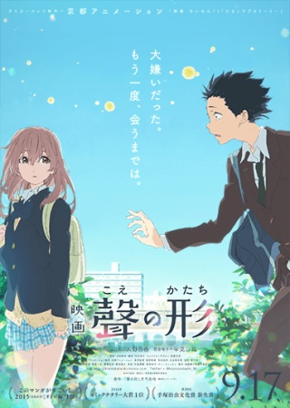
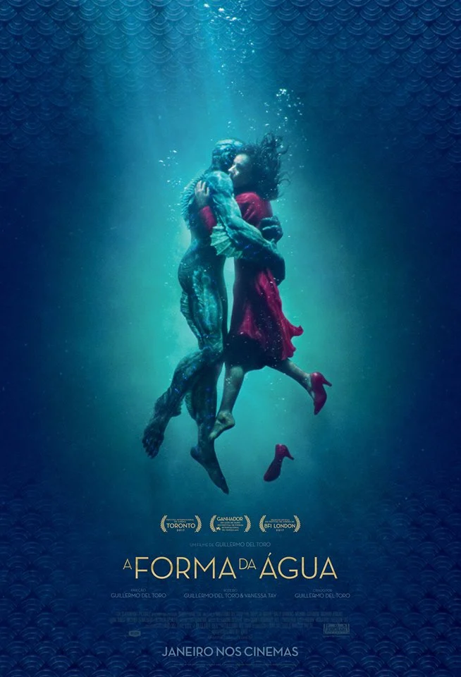

Nessa página queremos te recomendar algumas obras que são inclusivas e diga-se de passagem muito boas! Algumas delas, como 'Sign of Affection', mostram a vida pela visão da pessoa que é portadora de deficência auditiva. Queremos convidá-los a conhecer cada um desses títulos e conhecer um pouco mais sobre esse assunto de uma maneira que trate sobre o cotidiano.
Sign Of Affection
A Sign Of Affection (ゆびさきと恋々 Yubisaki to Renren?) é uma série de mangá shōjo escrita e ilustrada pelo duo de mangakás suu Morishita (Hibi Chouchou e Short Cake Cake). Começou a ser publicado em julho de 2019 pela revista Dessert da Kodansha. Atualmente a obra conta com 10 volumes tankōbon publicados. Uma adaptação do mangá foi feita para televisão em forma de anime pela Ajia-do Animation Works e estreou em janeiro de 2024.

Sinopse:
Yuki é uma típica estudante universitária que nasceu surda. Ela ama estar perto dos seus amigos, redes sociais e fazer compras. Certo dia, ela recebe ajuda de Itsuomi, um estudante da mesma universidade que ela, enquanto estava no metrô. A partir daí, nasce uma amizade entre eles que se torna cada vez mais especial. "Neste dia, Yuki sentiu o seu mundo mudar".
Informações Gerais:
Genêros: Drama, Romance
Mangá
Escrito e ilustrado por: Suu Morishita
Editoração: Kodansha
Revistas: Dessert
Demografia: Shoujo
Período de publicação: 24 de julho de 2019 - presente
Volumes: 10
Anime
Direção: Yūta Murano
Roteiro: Yōko Yonaiyama
Música: Yukari Hashimoto
Estúdio de animação:Ajia-do Animation Works
Distribuição/Licenciamento: Crunchyroll
Emissoras de televisão: Tokyo MX, MBS, BS NTV, AT-X
Período de exibição 6 de janeiro de 2024 - presente
A Voz do Silêncio: Koe no Katachi
Koe no Katachi (聲の形? "A Forma da Voz"; conhecido no Brasil como A Voz do Silêncio) é um filme japonês animado e produzido pela Kyoto Animation, sendo dirigido por Naoko Yamada e escrito por Reiko Yoshida, com design de personagens por Futoshi Nishiya e música de Kensuke Ushio. Baseado no mangá de mesmo nome escrito e ilustrado por Yoshitoki Ōima, o filme lançou no Japão em 17 de setembro de 2016.

Sinopse:
Uma estudante com problemas de audição sofre com o bullying dos colegas e decide mudar de escola. Anos mais tarde, um dos rapazes que a importunavam resolve se redimir.
Informações Gerais:
Direção: Naoko Yamada
Produção Executiva: Kyoto Animation
Roteiro: Reiko Yoshida
Baseado em: Koe no Katachi de Yoshitoki Ōima
Música: Kensuke Ushio
Distribuição: Shochiku
Lançamento: 17 de setembro de 2016
Idioma: Japonês
A Forma da água
O longa, vencedor do Oscar 2018, tem como protagonista uma mulher que não fala e se comunica por meio da Língua de Sinais. No filme, ela vive um romance com um ser, de outra espécie, a quem ensina a língua de sinais (mostrando que as diferenças estão aí para serem superadas). Outra questão sobre o longa, é que o fato de ela não falar, não a impede de se comunicar, de forma plena, com as pessoas, e isso faz do filme uma obra maravilhosa, que merece ser vista por todos!

Sinopse:
Década de 60. Em meio aos grandes conflitos políticos e transformações sociais dos Estados Unidos da Guerra Fria, a muda Elisa, zeladora em um laboratório experimental secreto do governo, se encanta com uma criatura fantástica mantida presa e maltratada no local. Para executar um arriscado e apaixonado resgate, ela recorre ao melhor amigo Giles e à colega de turno Zelda, em uma aventura que pode custar muito mais do que o seu emprego.
Informações Gerais:
Diretor: Guillermo del Toro
Bilheteria: 196 milhões USD
Diretor de arte: Nigel Churcher
Distribuidores: Searchlight Pictures, Nordisk Film Distribution
Prêmios: Oscar de Melhor Filme, Oscar de Melhor Direção
Indicações: Oscar de Melhor Filme, Oscar de Melhor Atriz